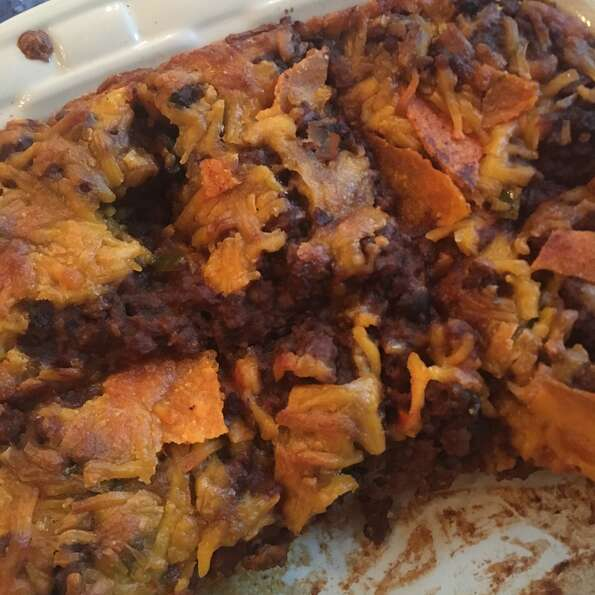

Quick Taco Bake Pie

Easy taco bake that reheats wonderfully!
The taco pie, layered with crushed taco shells, seasoned ground beef and cheddar cheeese, is quick and easy to make and even satisfies picky eaters.
Ingredients
- 1 pound ground beef
- 1 ounce package taco seasoning mix
- 1 cup salsa
- 15 ounce can black beans, rinsed and drained(optional)
- 8.5 ounce package corn bread mix
- 1/3 cup milk
- 1 egg
- 1 tablespoon honey
- 1 tablespoon corn oil
- 1/2 cup corn (optional)
- 1 cup shredded cheddar cheese
- 1 cup corn chips, partially crushed
Steps
- Cook and stir ground beef in a skillet over medium heat until brown and crumbled, 7 to 10 minutes; drain grease. Add taco seasoning; mix well. Stir in salsa and black beans; remove from heat.
- Grease a 9-inch pie pan or casserole dish.
- Mix corn bread mix, milk, egg, honey, and corn oil together in a bowl until batter is smooth; stir in corn. Pour batter into pie pan. Layer ground beef mixture over batter; sprinkle with Cheddar cheese. Top with corn chips.
- Place in a cold oven; set temperature to 350 degrees F (175 degrees C). Bake until sides are golden brown, 30 to 35 minutes.